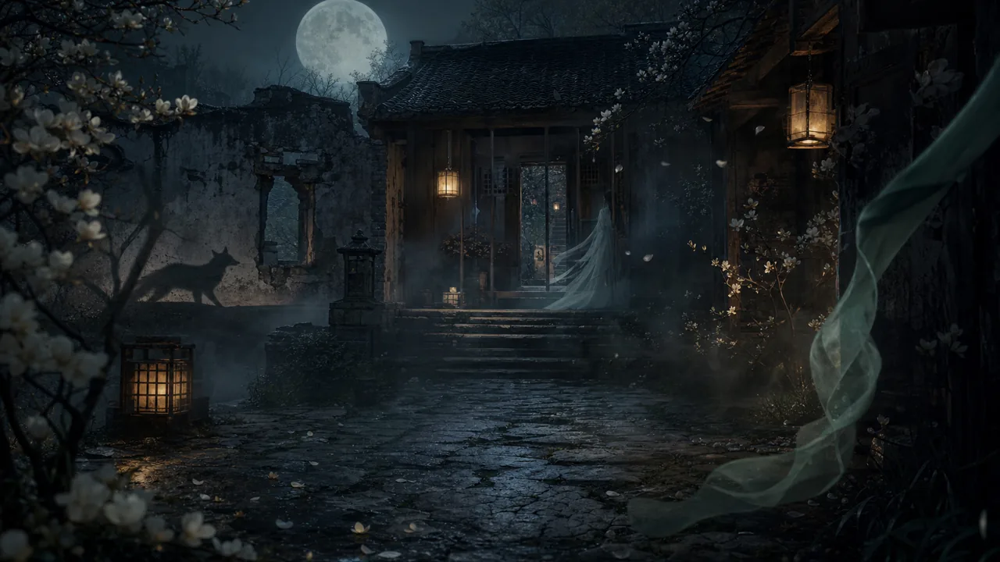

Fox women
Fox women as complex figures of household order, desire, choice, and social recognition.
Fox women, ghost women, water ghosts, flower spirits, painted-skin beings, and visionary presences.

Fox women as complex figures of household order, desire, choice, and social recognition.
A thread that separates danger imagery from the trapped person's actual choices.
Replacement-death lore, riverbanks, boundary crossings, and unexpected loyalty.
A visible monster made from desire, disguise, and the delay before recognition.
Flower spirits, longing trees, and plant memory across gentle tales and tragic legend.